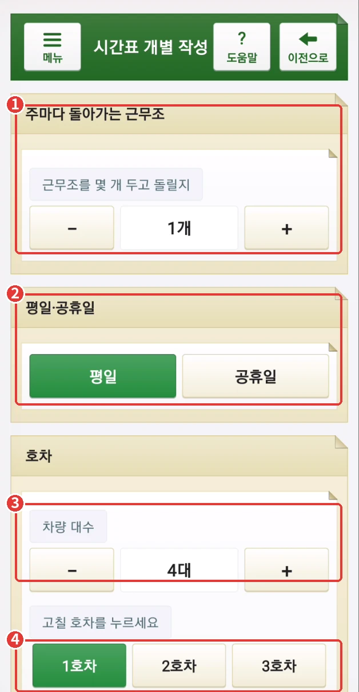
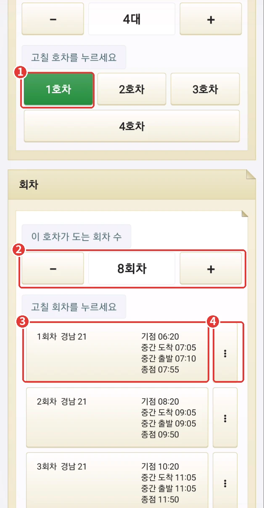
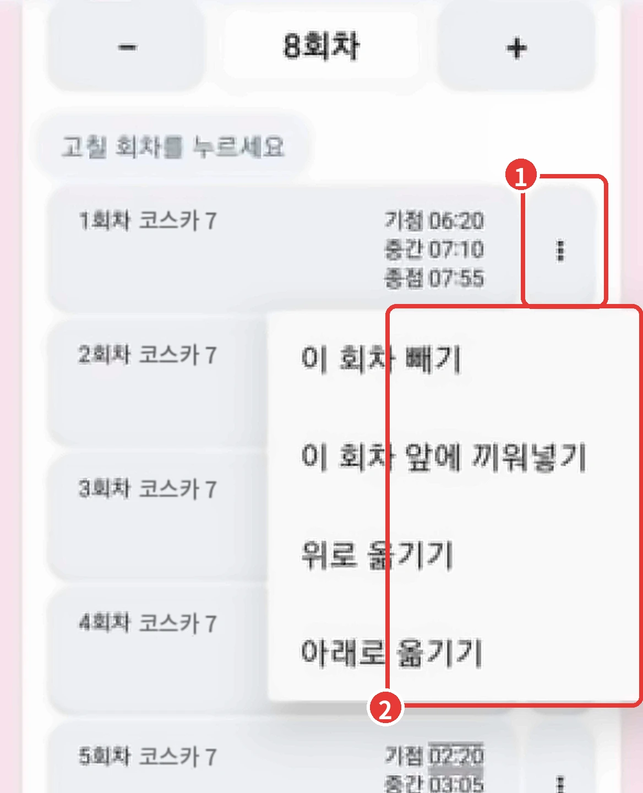
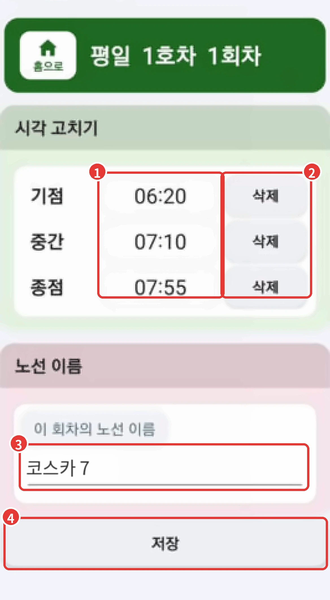

① 근무조 : 주마다 시간표가 바뀌는 회사만 늘립니다. 보통은 1개입니다.
② 평일 · 공휴일 : 넣거나 고칠 쪽을 고릅니다.
③ 차량 대수 : 호차가 몇 대인지 − · + 로 정합니다.
④ 고칠 호차를 누릅니다.

① 고른 호차가 초록으로 보입니다.
② 회차 수 : 그 호차가 도는 회차 수를 − · + 로 정합니다.
③ 회차를 누르면 그 회차 시각을 고치는 화면이 열립니다.
④ 점 세 개 단추 : 회차를 끼워 넣거나, 빼거나, 자리를 옮깁니다.

① 이 단추를 누르면
② 이 회차 빼기 · 이 회차 앞에 끼워넣기 · 위로 옮기기 · 아래로 옮기기가 나옵니다.

① 시각 칸을 누르고 숫자로 적습니다. 0915처럼 숫자만 적어도 됩니다.
② 삭제 : 그 칸을 비웁니다. 중간이 없는 회차는 비워 둡니다. 중간 도착은 알람이 없는 자리이며 비워 두어도 됩니다.
③ 이 회차의 노선 이름입니다.
④ 저장을 누르면 개별 작성 화면으로 돌아갑니다.
개별 작성 화면을 나갈 때 저장할지 묻습니다. 저장을 눌러야 시간표에 들어갑니다.